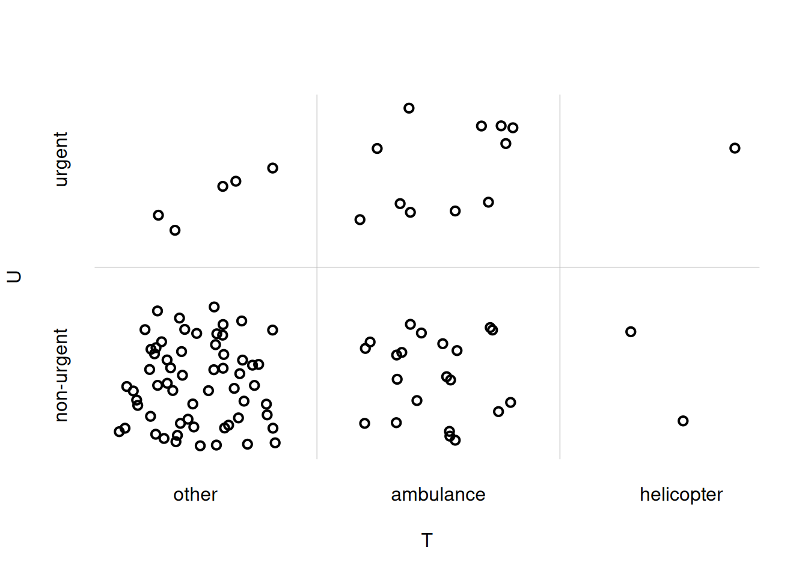
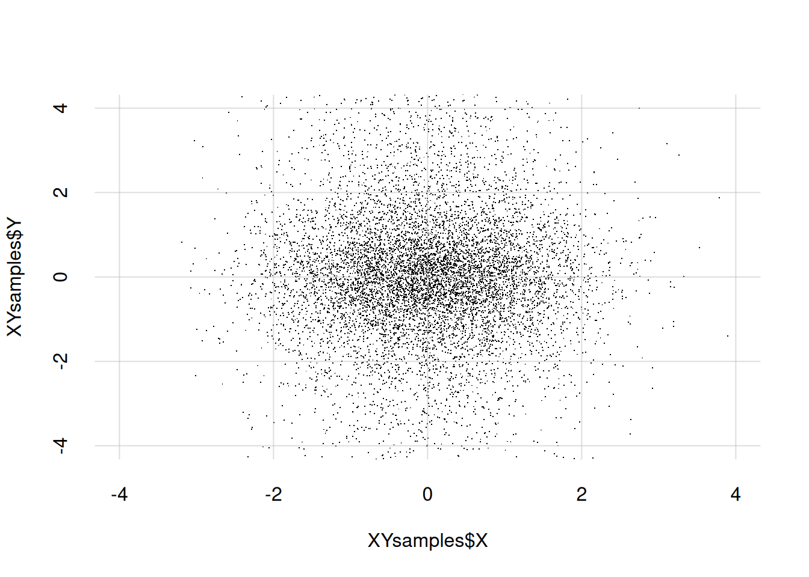

animal <- c('cat', 'dog', 'chicken', 'cow', 'pig', 'horse')
prob1 <- c(0.05, 0.3, 0.4, 0.2, 0.03, 0.02)Working with R, III
\(\DeclarePairedDelimiter{\set}{\{}{\}}\)
In this R interlude we shall see how to represent tables of joint probability distributions for two quantities (“contingency tables”), how to generate sample points from discrete probability distributions, and how to create 2D scatter plots of such samples.
Storing joint quantities in R
In a previous example we had a quantity \(\mathrm{animal}\) with a domain having six possible values, and a probability distribution over them. The domain and the probability distributions were simply stored in two R variables: animal and prob1:
and we can do many things simply with these: draw plots, generate sample points, and so on.
Now consider the example from § Representation of joint probability distributions, with two joint quantities: urgency \(U\) and transportation \(T\). The joint quantity \((U, T)\) has a domain with 2 × 3 possible values. Table 15.1 reported a joint probability distribution for this joint quantity.
How can we store information about this joint quantity?
There are many way to do that. One way is to follow the example of the \(\mathrm{animal}\) quantity, and just create two R variables: one containing all six possible values of \((U, T)\), and one containing the six values of the joint probability distribution.
Here we follow another, slightly more elegant way, which will be implicitly used in later chapters.
First we can store the quantities’ names and their domains as an R list(). It’s actually easier to show this with a concrete example than by wordy explanations. Take the quantity \(U\) with domain \(\set{\texttt{urgent}, \texttt{non-urgent}}\), and the quantity \(T\) with domain \(\set{\texttt{ambulance}, \texttt{helicopter}, \texttt{other}}\). We store the joint quantity \((U, T)\) as the list UT:
UT <- list(
U = c('urgent', 'non-urgent'),
T = c('ambulance', 'helicopter', 'other')
)Easy! You clearly understand how this could be generalized to three or more quantities with discrete domains. In fact, we could also use this representation for just one quantity. Each domain does not need to consist in character string; it could also be numeric. We can use any quantity names we like, but if they contain special characters such as spaces, hyphens -, and some others, then we must write them within back-ticks `...`, for instance `farm-animal`.
The individual domains stored in UT can be accessed by using the $ operator followed by the quantity’s name, as illustrated in this example:
UT$U[1] "urgent" "non-urgent"UT$T[1] "ambulance" "helicopter" "other"
Once we have the variable UT containing name and domain of each quantity, we can also get the domain for the joint quantity by using the R function expand.grid() with UT as argument. We must also add the argument stringsAsFactors = FALSE owing to how we treat some quantities in these notes; we won’t explain its meaning or reason.
Let’s generate the domain of \((U, T)\) and store it in the variable UTdomain:
UTdomain <- expand.grid(UT, stringsAsFactors = FALSE)The resulting object UTdomain is a so-called data.frame. Let’s simply print it to understand how it looks like:
UTdomain U T
1 urgent ambulance
2 non-urgent ambulance
3 urgent helicopter
4 non-urgent helicopter
5 urgent other
6 non-urgent otherIt has a column for each quantity, and each row shows a combination of values for those quantities. The numbers you see in front of each row are simply printed as reference. The total number of joint values, equal to the number of rows, can be obtained with the nrow() function:
nrow(UTdomain)[1] 6We can access any joint value, say the 3rd one, by using square brackets as follows; note the comma:
UTdomain[3, ] U T
3 urgent helicopter
Storing joint probability distributions in R
How can we store a joint probability distribution, like that in Table 15.1, for a joint quantity such as UT? There are many ways to do this as well. Let’s see three.
- We can simply create a variable that contains all six probability values. We must make sure that the ordering correspond to that of
UTdomain:
UTprob1 <- c(0.11, 0.17, 0.04, 0.01, 0.03, 0.64)(check that the order above is correct by comparing with Table 15.1 and UTdomain).
- We can add the probability values as an additional column in the
UTdomainobject; this is done withcbind()as follows:
UTprob2 <- cbind(
probability = c(0.11, 0.17, 0.04, 0.01, 0.03, 0.64),
UTdomain
)Take a look at how the UTprob2 object looks like:
UTprob2 probability U T
1 0.11 urgent ambulance
2 0.17 non-urgent ambulance
3 0.04 urgent helicopter
4 0.01 non-urgent helicopter
5 0.03 urgent other
6 0.64 non-urgent other
- We could use a representation that allows us to read the probabilities just like in Table 15.1. In R this is easily done with the built-in
array()function. This function has the following arguments which we use to store our information:
data =: the probabilities values (again in appropriate order).dim =: the sizes of the domains of the joint quantities. In our case they are \(3\) and \(2\).dimnames =: The list representing the joint quantity,UTin our case.
Let’s call the resulting object UTtable:
UTtable <- array(
data = c(0.11, 0.17, 0.04, 0.01, 0.03, 0.64),
dim = c(2, 3),
dimnames = UT
)Here is how the UTtable object looks like:
UTtable T
U ambulance helicopter other
urgent 0.11 0.04 0.03
non-urgent 0.17 0.01 0.64Very neat to read.
Sampling from discrete joint probability distributions in R
Our next task is to graphically represent the probability distribution of a joint quantity (for the case of two quantities). Here we focus on [scatter-plots representations](joint_probability.html#scatter-plots-and-similar].
As usual, in order to represent a probability distribution as a scatterplot we first need to generate some sample points from it.
The easiest way to do this in the case of a joint quantity is to numerically index its possible values, for instance with integers, and then to draw samples of these indices instead. We can then retrieve the quantity values corresponding to the sampled indices. The sampling is done again with the `sample()’ function.
All this procedure is more easily explained by a concrete example. Let’s generate 100 samples from the joint domain of the quantity \((U, T)\), and then print the first ten:
indexsamples <- sample(nrow(UTdomain), size = 100, prob = UTtable, replace = TRUE)
## print first ten
indexsamples[1:10] [1] 6 2 6 6 2 6 6 6 2 1When we printed the UTdomain object in the previous section, an indexing from 1 to 6 had already been done for us.
We can now prepare a sequence of 100 samples of joint values, using the index samples:
UTsamples <- UTdomain[indexsamples, ]Note the syntax within the square brackets: we are saying to take the rows – possibly with repetitions – listed in indexsamples; the comma followed by nothing means to leave the columns as they are. Check the first ten rows of UTsamples:
UTsamples[1:10, ] U T
6 non-urgent other
2 non-urgent ambulance
6.1 non-urgent other
6.2 non-urgent other
2.1 non-urgent ambulance
6.3 non-urgent other
6.4 non-urgent other
6.5 non-urgent other
2.2 non-urgent ambulance
1 urgent ambulancenote how the most probable value, \((\texttt{non-urgent}, \texttt{other})\) appears more often. You may also notice the curious indexing on the left, done automatically by R: the number after the period . tells us the numbers of new repetitions of that value. For instance 6.2 tells that that’s the 3rd time the 6th value appears in the list.
Plotting joint probability distributions in R
We can finally generate a scatterplot with the sample points just generated. It’s easily done with the flexiplot() function discussed in our previous R interlude. We extract the \(U\)-values by using the $U operator, and give them as y-axis values. Similarly for the \(T\)-values, using $T, as x-axis values. It’s important to use the xjitter = TRUE and yitter = TRUE arguments.
## load the function
source('tplotfunctions.R')
flexiplot(
x = UTsamples$T,
y = UTsamples$U,
xjitter = TRUE,
yjitter = TRUE,
xlab = 'T', ylab = 'U'
)
You notice that the ordering of the \(U\)- and \(T\)-values on the axes does not match the one we chose initially. To adjust that, we can explicitly specify the xdomain = and ydomain = arguments:
## load the function
source('tplotfunctions.R')
flexiplot(
x = UTsamples$T,
y = UTsamples$U,
xjitter = TRUE,
yjitter = TRUE,
xlab = 'T', ylab = 'U',
xdomain = UT$T,
ydomain = UT$U
)
The same procedure can be used to draw the scatterplot of a joint probability density. As an example, let’s first generate 10 000 sample points for the joint quantity \((X, Y)\), where both \(X\) and \(Y\) are continuous, and store them in a data.frame. Don’t pay too much attention to how the points are generated, as this is a very special case. We then show the first ten samples:
XYsamples <- data.frame(X = rnorm(n = 10000), Y = rcauchy(n = 10000))
XYsamples[1:10, ] X Y
1 0.4672127 0.787657
2 -0.4590422 -1.876990
3 0.1065156 14.240633
4 0.7055754 -2.502529
5 0.0326021 -0.437397
6 0.9303786 -175.036602
7 -2.2043263 -4.469357
8 -1.2585736 -2.208824
9 -1.1397237 -1.670019
10 0.5606012 -18.207065Now we draw the scatter plot with the points above. With continuous quantities we don’t need to use the ...jitter = arguments. It is often useful to state the x- and y-ranges of the plot explicitly with xlim = and ylim =; note that this means that some sample points may end up outside the plot:
flexiplot(
x = XYsamples$X, y = XYsamples$Y,
type = 'p', pch = '.',
xlim = c(-4, 4), ylim = c(-4, 4)
)